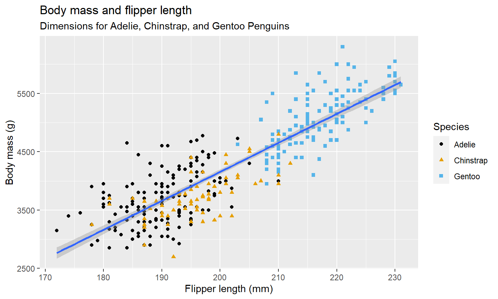
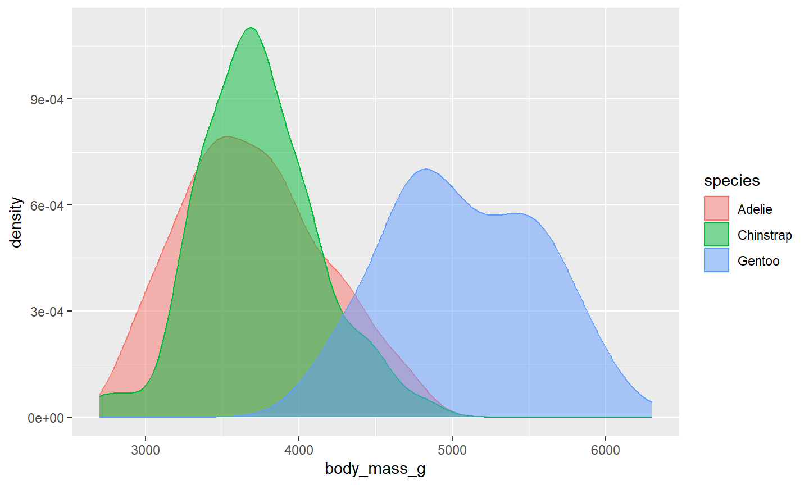
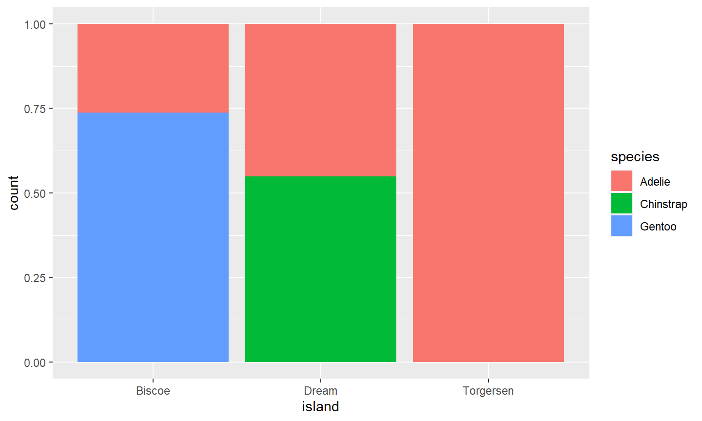
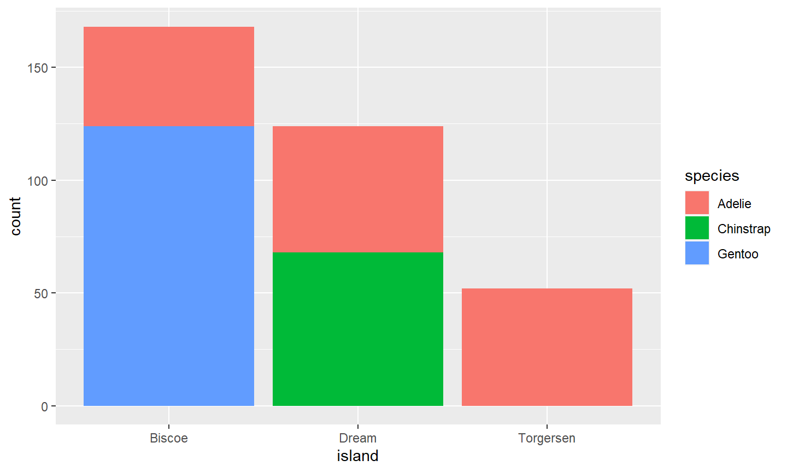
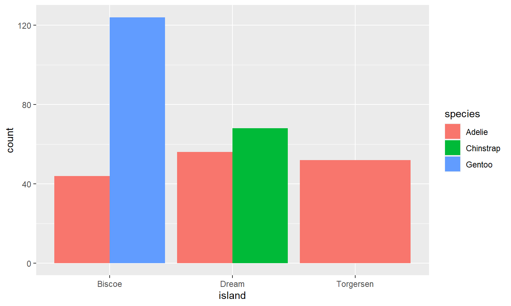

Recap of Last Week
Recap Lecture 4
- How to tell a story with data
- 5 steps of data analysis
- Introduction into visualization
- Visualization in R
- Base R graphs
ggplot2
Outline of Lecture 5
Outline of Lecture 5
- Recap: How to tell a story with data
- 5 steps of data analysis
- More Advanced Figures
- Tips
- Examples
Steps of Data Analysis

Recap: Telling a Story with Data
5 Steps of Data Analysis
- Ask
- Collect and understand
- Clean
- Analyze
- Tell your story
Progress
- What progress have you made?
- What is your progress since last week?
- Have you made visualizations in R?
- Sit in groups and discuss figures you have made
- What is the figure showing?
- How could it be improved?
More Advanced Figures
What would you like to learn?
What are additional things you could learn?
- How to choose which graph to use
- Learn new types of graphs
- Themes (make graphs prettier)
How to choose which graph to use
- Try different graphs
- Trial and error
- Critical thinking
- Look at other resources and what graphs they use
Choosing a graph
Five named graphs
| Named graph | Shows | Geometric object | Notes | |
|---|---|---|---|---|
| 1 | Scatterplot | Relationship between 2 numerical variables | geom_point() |
|
| 2 | Linegraph | Relationship between 2 numerical variables | geom_line() |
Used when there is a sequential order to x-variable, e.g., time |
| 3 | Histogram | Distribution of 1 numerical variable | geom_histogram() |
Facetted histograms show the distribution of 1 numerical variable split by the values of another variable |
| 4 | Boxplot | Distribution of 1 numerical variable split by the values of another variable | geom_boxplot() |
|
| 5 | Barplot | Distribution of 1 categorical variable | geom_bar() when counts are not pre-counted, geom_col() when counts are pre-counted |
Stacked, side-by-side, and faceted barplots show the joint distribution of 2 categorical variables |
Learn new types of graphs
- Use https://r-graph-gallery.com/
- ChatGPT
- Ask others (classmates, teaching assistant, lecturers)
- Be creative and search for the graph you want to create
Themes
R Themes
| Themes | Description |
|---|---|
| theme_bw() | white background with grid lines |
| theme_grey() | grey background and white grid lines (default) |
| theme_classic() | white background and no grid lines |
| theme_minimal() | minimal theme with no background annotations |
| theme_linedraw() | black lines of various widths on white backgrounds |
| theme_light() | light grey lines and axes |
And you can create your own theme!
Your own theme
plot_with_theme <- ggplot(ChickWeight,
aes(x = Time,
y = weight,
color = Diet)) +
geom_point() +
theme(text = element_text(colour="red",
size=20),
panel.grid.major.y=element_line(color="gray", size=0.25),
panel.grid.major.x=element_blank(),
panel.grid.minor=element_blank(),
panel.background=element_rect(fill="white", color=NA),
plot.background=element_rect(fill="white", color=NA),
legend.background=element_rect(fill="white", color=NA),
legend.position = "bottom"
)
## Warning: The `size` argument of `element_line()` is deprecated as of ggplot2 3.4.0. ## ℹ Please use the `linewidth` argument instead.
Your own theme
plot_with_theme

Tips
Practice makes perfect
- Always make a sketch on a piece of paper before programming
- Do not be afraid to try new things in R
- Try to make figures and see what does and does not work
- It is a step by step learning process
- Focus on practicing and being critical
- Work together and learn from each other
Examples
New data
Source: https://r4ds.hadley.nz/data-visualize
library(palmerpenguins) # First: install.packages("palmerpenguins")
library(ggthemes) # First: install.packages("ggthemes)
summary(penguins)
## species island bill_length_mm bill_depth_mm ## Adelie :152 Biscoe :168 Min. :32.10 Min. :13.10 ## Chinstrap: 68 Dream :124 1st Qu.:39.23 1st Qu.:15.60 ## Gentoo :124 Torgersen: 52 Median :44.45 Median :17.30 ## Mean :43.92 Mean :17.15 ## 3rd Qu.:48.50 3rd Qu.:18.70 ## Max. :59.60 Max. :21.50 ## NA's :2 NA's :2 ## flipper_length_mm body_mass_g sex year ## Min. :172.0 Min. :2700 female:165 Min. :2007 ## 1st Qu.:190.0 1st Qu.:3550 male :168 1st Qu.:2007 ## Median :197.0 Median :4050 NA's : 11 Median :2008 ## Mean :200.9 Mean :4202 Mean :2008 ## 3rd Qu.:213.0 3rd Qu.:4750 3rd Qu.:2009 ## Max. :231.0 Max. :6300 Max. :2009 ## NA's :2 NA's :2
Example graph 1
example_graph_1 <- ggplot(
data = penguins,
mapping = aes(x = flipper_length_mm, y = body_mass_g)
) +
geom_point(aes(color = species, shape = species)) +
geom_smooth(method = "lm") +
labs(
title = "Body mass and flipper length",
subtitle = "Dimensions for Adelie, Chinstrap, and Gentoo Penguins",
x = "Flipper length (mm)", y = "Body mass (g)",
color = "Species", shape = "Species"
) +
scale_color_colorblind()
Example graph 1
example_graph_1
## `geom_smooth()` using formula = 'y ~ x'
## Warning: Removed 2 rows containing non-finite values (`stat_smooth()`).
## Warning: Removed 2 rows containing missing values (`geom_point()`).

Example graph 2
example_graph_2 <- ggplot(penguins,
aes(x = body_mass_g,
color = species,
fill = species)) +
geom_density(alpha = 0.5)
Example graph 2
example_graph_2
## Warning: Removed 2 rows containing non-finite values (`stat_density()`).

Example graph 3
example_graph_3 <- ggplot(penguins,
aes(x = island,
fill = species)) +
geom_bar(position = "fill")
Example graph 3
example_graph_3

Example graph 4
example_graph_4 <- ggplot(penguins,
aes(x = island,
fill = species)) +
geom_bar(position = "stack")
Example graph 4
example_graph_4

Example graph 5
example_graph_5 <- ggplot(penguins,
aes(x = island,
fill = species)) +
geom_bar(position = "dodge")
Example graph 5
example_graph_5

Todays Session
Todays session
- Make sketches of graphs you want to make
- Try to make figures using your data
- Try to use other data to make figures
- Find new types of graphs to make
- Make your existing graphs prettier
- Focus on learning by doing